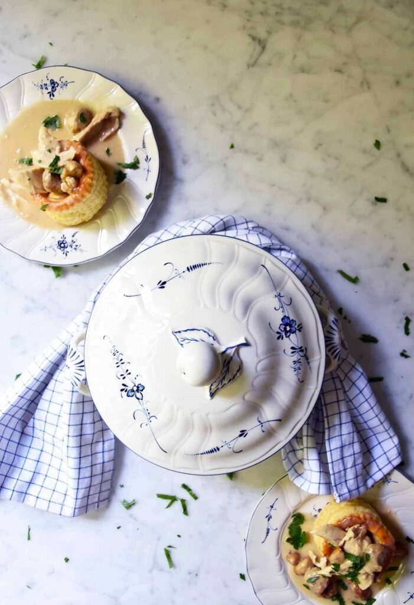

Vol au Vent Recipe

A classic Belgian chicken stew that will rock your mind!
Ingredients
- 1 organic chicken
- 500 ml chicken stock
- 250 gr small white Parisian mushrooms
- 2 tablespoons unsalted butter + extra
- 2 tablespoons flour
- 225g plain flour
- 1 dl cream
- 300 gr minced pork meat rolled in small coin sizer meatballs
- 4 puff pastry hollow round cases ( shop bought or home made)
- flat parsley or watercress, chopped
- salt and pepper
Steps
- season with salt and pepper. Brown the chicken on all sides.
- submerge in chicken broth and water.
- Sauté the meatballs.
- Sauté the mushrooms.
- shred the chicken meat from the bones.
- make a roux: melt the butter, add flour.
- add chicken stock and keep stirring till it thickens.
- add the chicken, meatballs and mushrooms. Adjust seasoning.
- fill up the puff pastry cases.
Return to home